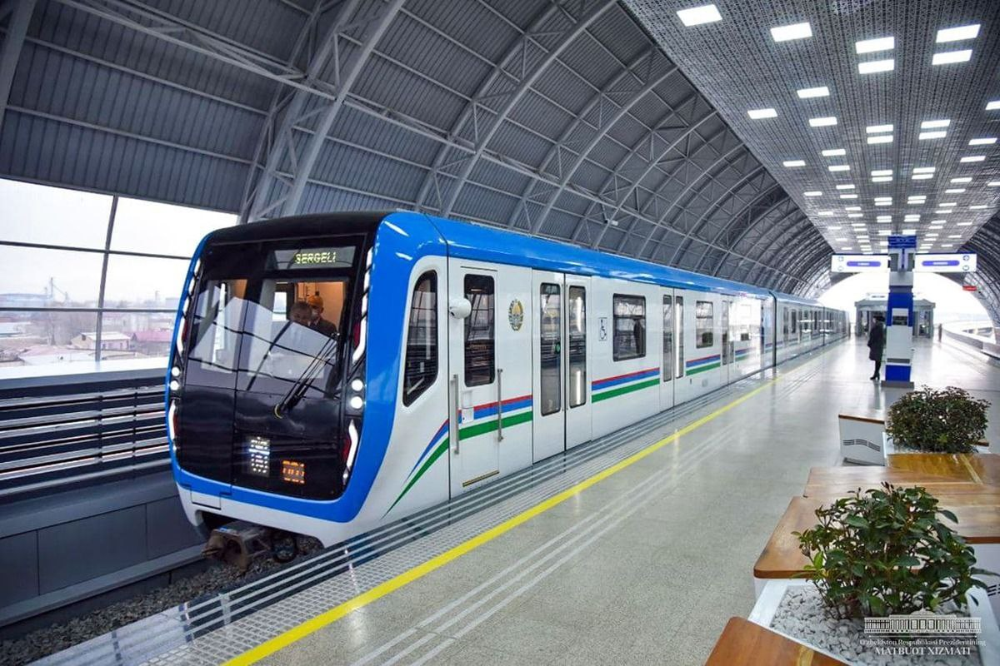

Toshkent metrosidagi kitob almashish tizimiga xush kelibsiz!
"Bu veb-sayt Toshkent metrosida mavjud kitoblarni kuzatish va ulardan foydalanishni osonlashtirish uchun yaratilgan.”

Tizim qanday ishlaydi?
1. Toshkent metrosidagi kitoblarni kuzatish
Saytda har bir metro bekatida mavjud kitoblar ro‘yxati keltirilgan. Har bir kitobning nomi va mavjudligi ko‘rsatilgan.
2. Metro bekatlarini ko‘rish
Toshkent metrosining xaritasiga qarab,qaysi bekatda ekanligingizni aniqlab olasiz. Har bir bekatga kirganda, u yerdagi kitoblar ro‘yxatini ko‘rishingiz mumkin bo`ladi.
3. Kitobni olish va qaytarish
Agar kitobni olmoqchi bo‘lsangiz, QR kodlardan foydalanishingiz mumkin. Kitob olingan bo‘lsa, u "Mavjud emas" degan xabar chiqadi.
4. QR kodni skaner qilish
Metro bekatlarida kitoblarda joylashgan QR kodni skaner qilib, mavjud kitoblarni tekshirish yo olib ketish mumkin. Agar siz Chilonzor bekatidan Deyl Karnegining "Do‘st orttirish va insonlarga ta’sir o‘tkazish" kitobini olmoqchi bo‘lsangiz, uni skaner qilish orqali u kitobni olishingiz mumkin!
Qo‘shimcha Imkoniyatlar
Kitob tavsiflari: Har bir kitob haqida qisqacha ma’lumot Interaktiv xarita: Metro bekatlarini osongina ko‘rish QR kod orqali tezkor tekshiruv
How Does the System Work?
1. Track Available Books in Tashkent Metro
The website provides a list of books available at each metro station. Each book has its title and availability status displayed.
2. Explore Metro Stations
View the Tashkent metro map and select a station. See the books available at each metro stop.
3. Borrow and Return Books
If you want to borrow a book, you can check its status via a QR code. If the book has already been taken, it will be marked as "Not Available."
4. Scan the QR Code
QR codes placed in metro stations allow you to check available books. If you scan the QR code at Chilonzor station, and the book "How to Win Friends and Influence People" by Dale Carnegie has been borrowed, the system will display this information.
Additional Features
Book Summaries: Brief descriptions of each book. Interactive Metro Map: Easily navigate through metro stations. Quick QR Code Check: Instantly verify book availability.